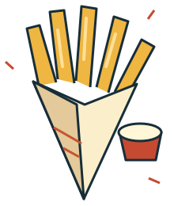

Deux équipes, six manches
Concertez-vous ! Les défis à indices se jouent à tour de rôle. Les autres défis pourront suivre une mécanique différente.

AVANT DE TOURNER LA CLÉ
Deux équipes, deux noms. Le formateur tient le volant,
vous vous concertez et répondez à voix haute.
LE BRIEF AVANT LE DÉPART
Concertez-vous ! Les défis à indices se jouent à tour de rôle. Les autres défis pourront suivre une mécanique différente.
Énigmes à trois indices :
Autres défis : barèmes à définir.
Chaque équipe tente une fois. Une erreur : la main passe à l’autre équipe. Deux erreurs : indice suivant.
La première bonne réponse termine l’énigme et rapporte les points de l’indice. Après trois indices sans réussite : 0 point.
Deux jokers par équipe pour toute la partie. À jouer entre deux défis, pour soi ou contre l’adversaire. Une seule activation entre deux défis.
On détermine la réponse avant d’attribuer les points : bonne réponse +10 ; mauvaise réponse −10.
Règles et barème provisoires. Jokers non activés ; les quatre questions viendront plus tard.
LE CARNET DE ROUTE
Voici l’itinéraire. Pour cette première escale, testez notre énigme de démonstration.
Un pays, une spécialité… à vous de jouer !
Les six manches et les jokers ne sont pas encore jouables. La démo est une escale indépendante.
ESCALE DÉMO / SPÉCIALITÉ MYSTÈRE
AU TOUR DE
LE MYSTÈRE EST DANS LE CORNET

BELGIQUE / BRUXELLES
Voisine de la France, la Belgique est célèbre pour ses frites servies en cornet avec de la sauce.
Bruxelles, sa capitale, accueille plusieurs grandes institutions de l’Union européenne.
Rejouer conserve les scores et alterne l’équipe qui commence.